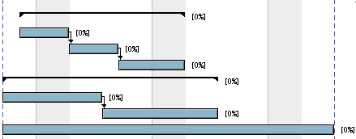

Antériorités
Ganttproject vous permet de spécifier les relations entre 2 tâches. Vous
pouvez le faire directement sur le graphique en cliquant sur la 1ère tâche
puis maintenir/glisser jusqu'a la 2ème et enfin lâchez.
Pendant cette opération, une flèche suit la souris, la seconde tâche
devient dépendante de la première.
Voir exemple ci-contre :
